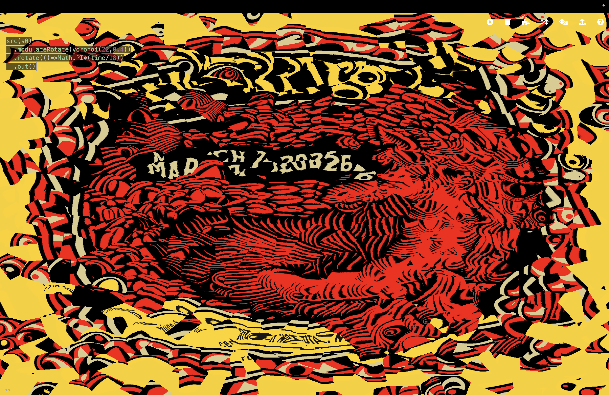
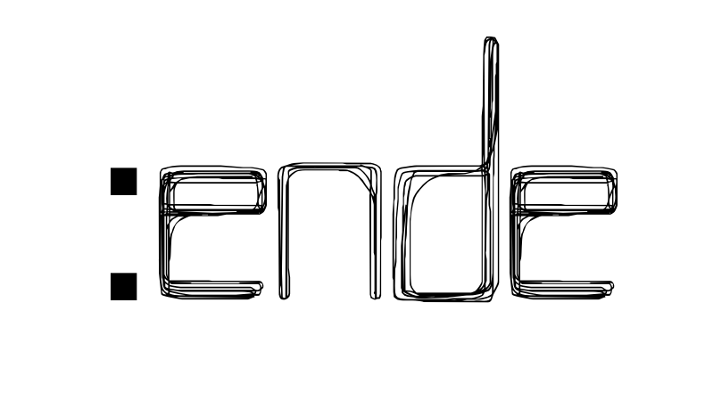

An afternoon of play. A night of improvised jamming!
Endemics Collective is bringing live coding to you at the Geary Art Crawl on Sunday March 8th.
The Endemics Collective are a group of experimental artists rooted in DIY and open-source culture, focused on live coding with esoteric languages, synthesizers, and sequencers. Formed in 2019, the group has since been performing together, creating interactive installations, curating performance events, facilitating public jams and workshops.
We will be at the Geary Art Crawl, March 8th 2026.

Cymatiste is a media artist specializing in community-engaged
installations. Hryso is a studio
instructor for audiovisual arts, working towards her thesis in electronic kinetics. Kavi is a live
coding instructor, visual artist, and doctoral researcher in Computational Arts. Magfoto is a live
coder, artist, and professor at OCAD U. Alejandro is a sound artist,
media
arts scholar, composer and
live coder from Mexico City, currently residing in Tkaronto.